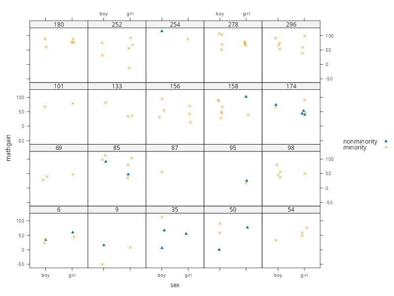
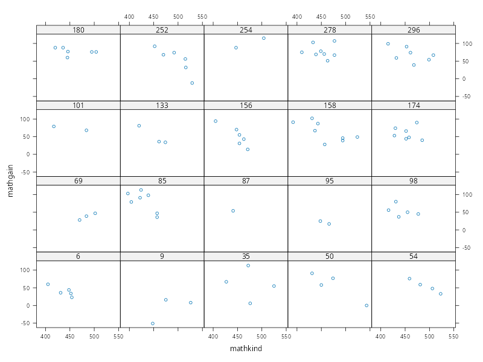

PCHN63112 Workshop: Three-level Clustered Data Example#
In this example,we will examine building a mixed-effects model for clustered data that contains three levels of variation. This will demonstrate how the multilevel framework extends beyond two levels, as well as how this can be integrated into a mixed-effects model.
The Classroom Data#
The data we will use concern measurements of improvement in maths ability in a selection of students from different classrooms across different schools. In total, these data contains measurements from 1,190 students from 312 classrooms from 107 schools. Importantly, these data were measured from first-graders in the USA (ages 6-7). As such, all students stay within the same classroom with the same teacher for the whole year. A wide variety of additional variables were captured describing the local area of the school, the teacher’s experience and maths knowledge, and the student’s demographic details.
The data can be downloaded from here. Once downloaded to the current working directory, the code below will read the data into R and then print values for the first two classrooms from the first school
classroom <- read.csv('classroom.csv')
print(classroom[1:11,])
sex minority mathkind mathgain ses yearstea mathknow housepov mathprep
1 1 1 448 32 0.46 1 NA 0.082 2.00
2 0 1 460 109 -0.27 1 NA 0.082 2.00
3 1 1 511 56 -0.03 1 NA 0.082 2.00
4 0 1 449 83 -0.38 2 -0.11 0.082 3.25
5 0 1 425 53 -0.03 2 -0.11 0.082 3.25
6 1 1 450 65 0.76 2 -0.11 0.082 3.25
7 0 1 452 51 -0.03 2 -0.11 0.082 3.25
8 0 1 443 66 0.20 2 -0.11 0.082 3.25
9 1 1 422 88 0.64 2 -0.11 0.082 3.25
10 0 1 480 -7 0.13 2 -0.11 0.082 3.25
11 0 1 502 60 0.83 2 -0.11 0.082 3.25
classid schoolid childid
1 160 1 1
2 160 1 2
3 160 1 3
4 217 1 4
5 217 1 5
6 217 1 6
7 217 1 7
8 217 1 8
9 217 1 9
10 217 1 10
11 217 1 11
There are quite a few variables here, so we split them into those that relate to each school as a whole, each classroom as a whole and each pupil as a whole.
School
schoolid: the unique index of each schoolhousepov: proportion of households in the local area below the poverty line
Classroom
classid: the unique index of each classroomyearstea: the teacher’s years of experiencemathprep: the amount of training in mathematics education the teacher has undertakenmathknow: the amount of mathematics knowledge the teacher has
Student
childid: the unique index of each studentmathgain: the student’s gain in maths achievement over the yearsex: the student’s sexmathkind: the student’s maths score in the previous (kindergarten) yearminority: whether the student is from an ethnic minority backgroundses: the student’s socioeconomic status
Some of these variables are indices to keep things organised and to allow us to define different levels of the data: schoolid, classid, childid. The outcome variable is mathgain, highlighted in bold, indicative of how much the student has improved over the year spent in one particular classroom. This leaves eight potential predictor variables that could explain why some students improve more than others.
As these data are already long-formatted, we just need to convert the relevant variables to factors. We also choose to relabel both sex and minority to make their meaning clearer
classroom$classid <- as.factor(classroom$classid)
classroom$schoolid <- as.factor(classroom$schoolid)
classroom$sex <- as.factor(classroom$sex)
classroom$minority <- as.factor(classroom$minority)
levels(classroom$sex) <- c('boy','girl')
levels(classroom$minority) <- c('nonminority', 'minority')
We can now briefly summarise all the variables. At this stage, we would usually produce some plots and do further data checking and wrangling, but we will leave this step to one side to keep the example shorter.
summary(classroom)
sex minority mathkind mathgain
boy :588 nonminority:384 Min. :290.0 Min. :-110.00
girl:602 minority :806 1st Qu.:439.2 1st Qu.: 35.00
Median :466.0 Median : 56.00
Mean :466.7 Mean : 57.57
3rd Qu.:495.0 3rd Qu.: 77.00
Max. :629.0 Max. : 253.00
ses yearstea mathknow housepov
Min. :-1.61000 Min. : 0.00 Min. :-2.5000 Min. :0.0120
1st Qu.:-0.49000 1st Qu.: 4.00 1st Qu.:-0.7200 1st Qu.:0.0850
Median :-0.03000 Median :10.00 Median :-0.1300 Median :0.1270
Mean :-0.01298 Mean :12.21 Mean : 0.0312 Mean :0.1782
3rd Qu.: 0.39750 3rd Qu.:20.00 3rd Qu.: 0.8500 3rd Qu.:0.2550
Max. : 3.21000 Max. :40.00 Max. : 2.6100 Max. :0.5640
NA's :109
mathprep classid schoolid childid
Min. :1.000 26 : 10 11 : 31 Min. : 1.0
1st Qu.:2.000 42 : 10 12 : 27 1st Qu.: 298.2
Median :2.300 13 : 9 71 : 27 Median : 595.5
Mean :2.612 189 : 9 76 : 27 Mean : 595.5
3rd Qu.:3.000 205 : 9 77 : 24 3rd Qu.: 892.8
Max. :6.000 253 : 9 31 : 22 Max. :1190.0
(Other):1134 (Other):1032
Some elements of note from these summaries:
sexis balanced, so there is unlikely to be a bias here in terms of sex-related differences in attainment.minorityindicates that the majority of the sample are from ethnic minority backgrounds (\(806/(806+384) \times 100 = 67.73\%\)).Some children have negative
mathgainscores, indicating that they got worse over the year.There is a wide variation in
yearstea, with some teachers having 40 years of experience and others having 0 years of teaching.There is also wide variation in
housepov, with some school in area with very little poverty (1% of local houses) and some schools in areas with high poverty (56% of local houses).There are missing values in
mathknow, as some teachers were not measured.
Model Notation#
As these data are a mixture of categorical and continuous variables, a more general regression framework will be needed when writing this model. In what follows, we will use descriptive labels rather than greek letter for categorical variables (e.g. \(\text{sex}_{j}\) rather than \(\alpha_{j}\)) and will introduce \(\beta\)-coefficients for continuous variables (e.g. \(\beta_{1} \times \text{mathknow}_{i}\) rather than \(\beta_{1}x_{i1}\)). This should hopefully make it clearer which terms are categorical and which are continuous. In reality, the whole model is fit as a regression with dummy variables in place of the categorical predictors. However, it can be less clear to write the model this way, even if this is the reality of how it is fit.
Data Structure#
Although we already know what structure these data have, we will run through the logic for completeness.
Firstly, we need to determine our unit of analysis. In this example, our model is trying to explain improvements in maths scores in students. The entities that our model is describing are the students themselves, so these are our units of analysis.
Secondly, we determine what each row of the long-formatted data represents in relation to the units of analysis. Examining the first few rows
head(classroom)
sex minority mathkind mathgain ses yearstea mathknow housepov mathprep
1 girl minority 448 32 0.46 1 NA 0.082 2.00
2 boy minority 460 109 -0.27 1 NA 0.082 2.00
3 girl minority 511 56 -0.03 1 NA 0.082 2.00
4 boy minority 449 83 -0.38 2 -0.11 0.082 3.25
5 boy minority 425 53 -0.03 2 -0.11 0.082 3.25
6 girl minority 450 65 0.76 2 -0.11 0.082 3.25
classid schoolid childid
1 160 1 1
2 160 1 2
3 160 1 3
4 217 1 4
5 217 1 5
6 217 1 6
we can see that each row corresponds to a single unit (student) measured once. So these are neither repeated measurements or longitudinal data.
Finally, we need to determine whether there are any clustering variables that represent a higher-order dependency structure in these data. From what we can see above, there are several variables that are constant across multiple students: yearstea, mathknow, housepov, mathprep, classid and schoolid. Of those, only classid and schoolid are categorical and so are the only candidates for either grouping variables or clustering variables.
In terms of thinking about clustering variables as representative of a shared environment, both classid and schoolid fit the description. These are both elements that each student is IN rather than something each student HAS. Students within a classroom may be correlated by virtue of sharing a teacher, sharing the same corpus of classmates and sharing the same teaching environment. Similarly, classrooms within a school may be correlated by virtue of sharing the same physical location, the same school budget and the same senior members of staff. The different schools represent the top boundary of dependence, because different schools will be independent of each other. Within a school, each classroom will have a degree of independence, as these are separate entities. However, they will also share a degree of dependence due to being within the same school. So this is a separate boundary of dependence. We imagine these as smaller covariance blocks within a larger covariance block.
Based on this, we can construct the following table of the levels of these data, using the guidance in the lesson
Data Type |
Clustered |
|---|---|
Dataset |
|
Level 1 |
Student |
Level 2 |
Classroom |
Level 3 |
School |
We could also imagine a more complex version of these data, where each student was measured at multiple points within a year. This would then be longitudinal clustered data with four levels. We would have the longitudinal measurements at Level 1, student at Level 2, classroom at Level 3 and school at Level 4. This would lead to quite a complex dependency structure that would be very difficult to reason about and build using a method like GLS. However, the mixed-effects framework allows us to build this carefully in layers, without every having to touch the covariance structure.
Model Building#
To build a model of this dataset, we use the 3-step procedure outlined in the lesson. We assume at this point that the data has been investigated, wrangled, cleaned and ready for modelling.
Step I: A Single Dependency Structure#
We start by isolating a single dependency structure. This needs to be at the lowest level, with no further dependency structures within. In this example, this is a single classroom. We choose classid == '174' for this purpose, after examining several candidates. This was chosen because it contains a reasonable number of measurements (7 students), has no missing data and has representation of both levels of minority. During this exploration, it was notable that many classrooms are constant in terms of minority, which will be important to bear in mind when fitting the model.
classroom.1 <- subset(classroom, classid=='174')
print(classroom.1)
sex minority mathkind mathgain ses yearstea mathknow housepov
912 girl minority 474 90 0.04 11 1.75 0.21
913 boy nonminority 430 74 -0.03 11 1.75 0.21
914 girl nonminority 452 44 -0.67 11 1.75 0.21
915 girl nonminority 428 53 -0.42 11 1.75 0.21
916 boy minority 452 66 -0.73 11 1.75 0.21
917 girl nonminority 485 40 -0.78 11 1.75 0.21
918 girl minority 458 48 -0.44 11 1.75 0.21
mathprep classid schoolid childid
912 2 174 81 912
913 2 174 81 913
914 2 174 81 914
915 2 174 81 915
916 2 174 81 916
917 2 174 81 917
918 2 174 81 918
In terms of the variables suitable for an individual model of a single classroom, we note that many of the variables above are constant because they are defined either at the level of a classroom as a whole, or a school as a whole. As such, they are not suitable for modelling the individual students. We remove these below
classroom.1 <- subset(classroom, classid=='174', select=c(-yearstea,-mathknow,-housepov,-mathprep,-classid,-schoolid))
print(classroom.1)
sex minority mathkind mathgain ses childid
912 girl minority 474 90 0.04 912
913 boy nonminority 430 74 -0.03 913
914 girl nonminority 452 44 -0.67 914
915 girl nonminority 428 53 -0.42 915
916 boy minority 452 66 -0.73 916
917 girl nonminority 485 40 -0.78 917
918 girl minority 458 48 -0.44 918
Based on this, our basic model for a single classroom is
where \(i\) indexes the student, \(j\) indexes sex and \(k\) indexes minority. Both \(\text{sex}_{j}\) and \(\text{minority}_{k}\) are indicative of categorical effects, whereas \(\text{mathkind}_{i}\) and \(\text{ses}_{i}\) are indicative of continuous predictors with associated regression slopes \(\beta_{1}\) and \(\beta_{2}\).
We can fit this model in R as shown below
class.1.lm <- lm(mathgain ~ 1 + sex + minority + mathkind + ses, data=classroom.1)
summary(class.1.lm)
Call:
lm(formula = mathgain ~ 1 + sex + minority + mathkind + ses,
data = classroom.1)
Residuals:
912 913 914 915 916 917 918
6.898 -5.146 2.530 4.895 5.146 -2.279 -12.043
Coefficients:
Estimate Std. Error t value Pr(>|t|)
(Intercept) 8.9519 125.7963 0.071 0.950
sexgirl -14.1331 11.4198 -1.238 0.341
minorityminority 7.8017 10.3018 0.757 0.528
mathkind 0.1662 0.2936 0.566 0.628
ses 42.4991 15.7473 2.699 0.114
Residual standard error: 11.86 on 2 degrees of freedom
Multiple R-squared: 0.8578, Adjusted R-squared: 0.5735
F-statistic: 3.017 on 4 and 2 DF, p-value: 0.2641
However, notice that there are only 2 residual degrees of freedom left, because we have fit 5 parameters to 7 datapoints. If we had fewer students in this class, the model would fail to fit. Unfortunately, the data are quite limited for most of the classrooms in this dataset. To see this, we use the code below to select 20 random classrooms and then plot them as panels with sex on the \(x\)-axis and different symbols used to indicate the levels of minority.
library('lattice')
set.seed(666)
keep.IDs <- sample(unique(classroom$classid), 20) # select 20 random class IDs
xyplot(mathgain ~ sex | classid, # x-axis=sex, panels=classroom
groups = minority, # minority different symbols
data = subset(classroom, classid %in% keep.IDs), # only random class IDs
type = "p", # points (not joined)
auto.key = TRUE, # add key
jitter.x = TRUE, # jitter points for visibility
par.settings = list(
superpose.symbol = list(
pch = c(17,4) # symbols to triangle and cross
)
)
)

As we can see, some classrooms have much less data than others. In many cases, there is only a single level of minority represented. Some classrooms only have a single student who was measured, whereas in others multiple students were measured but only of one sex. This suggests already that data will need be to pooled across classrooms in order to estimate the effects of sex and minority, potentially precluding the idea of allowing sex and minority to vary per-classroom.
Step II: Expand to Multiple Structures#
In our second step, we expand the model above to multiple classrooms. We index these using the notation of \((c)\), to indicate which terms belong to a particular classroom. We start with the most general case of allowing every term to vary by-classroom, giving us
We can now reason more carefully about each of these.
In terms of \(\text{mean}^{(c)}\), if we want to use a mixed-effects models then the bear minimum is a random intercept term. Allowing \(\text{mean}^{(c)}\) to differ per-classroom implies that each classroom is a random sample from a distribution of classrooms. The degree of \(\text{mathgain}\) depends upon the specific classroom environment and the specific teacher, rather than being the same across all classrooms. If it were the same, this would imply that any differences across students are down to the student’s own characteristics and it would not matter if the student was in a different classroom or in a different school. In this scenario, the classroom has no bearing on the outcome. Instead, we can choose treat each classroom as a distribution of \(\text{mathgain}\) scores with its own specific average value of \(\text{mathgain}\) that will differ from other classrooms. In this scenario, the classroom does have an effect on the outcome, implying that an individual student may perform differently in a different classroom. In addition, given that classroom is our clustering variable, it is usually sensible to treat this as random rather than fixed.
The remaining terms in this individual-classroom model present something of a challenge. For each of these, consider the implication of treating them as random rather than fixed
\(\text{sex}^{(c)}_{j}\) — Any differences in \(\text{mathgain}\) between boys and girls depends upon the classroom environment, with some teachers able to close gaps and some potentially widening gaps.
\(\text{minority}^{(c)}_{k}\) — Any differences in \(\text{mathgain}\) between minority and non-minority children depends upon the classroom environment, with some teachers able to close gaps and some potentially widening gaps.
\(\beta_{1}^{(c)}\) — The relationship between a student’s kindergarten score and their eventual value of \(\text{mathgain}\) depends upon the classroom environment, with some teachers associated with a much stronger relationship than others.
\(\beta_{2}^{(c)}\) — The relationship between a student’s socioeconomic status their eventual value of \(\text{mathgain}\) depends upon the classroom environment, with some teachers associated with a much stronger relationship than others.
In all cases, simply reasoning about these terms will depend upon how much we believe teachers are able to influence individual students, despite their characteristics. This can get a bit philosophical, depending upon whether we believe students are handed to teachers as a tabula rasa, available for molding in whatever shape the teacher desires, or whether there are pre-existing characteristics of each student that will dictate performance, despite the efforts of individual teachers. Certainly, we could imagine individual teachers who are able to create an environment where students can excel irrespective of these factors, but do we believe this is something that varies enough across different classrooms and schools to offset any strong global pattern, or would this just effectively be sampling noise?
We could also take a more data-driven approach to this decision. For instance, we could plot the data for mathkind within those classrooms randomly sampled earlier
xyplot(mathgain ~ mathkind | classid, # x-axis=mathkind, panels=classroom
data = subset(classroom, classid %in% keep.IDs), # only random class IDs
type = "p", # points (not joined)
)

Unfortunately, there is no immediately obvious pattern either within individual classrooms or across all classrooms. This could be suggestive that mathkind is simply not a useful predictor, but at this stage it does not help with the question of random or fixed. This is very similar across all other variables, meaning that the data-driven approach is less useful here. We need to therefore use reason, practical limitations and model comparisons to make a decision.
It was recommended in the accompanying lesson that in cases of uncertainty we simply treat everything as random and then use model comparisons. However, there is a catch with this approach. If we do this here, then we have 5 random effects, which will mean 5 error terms and 5 variances, as well as correlations between all of them. This tends to be too much for most random effects algorithms. So even if we desire this theoretically, in terms of practicality we will be forced to simplify. Nervousness about fitting this model is also justified when we consider that the amount of data per-classroom is very limited, with only a small number that would be able to fit the full model we want. This means that a lot of pooling and shrinkage will be going on, with many of the effects based on no data for that particular classroom. Indeed, the average number of students per-classroom is
mean(table(classroom$classid))
[1] 3.814103
which is very small. Realistically, if we want the full random-effects specification we need much larger samples within each classroom. Of course, we could power through and see whether a model with all these random terms can be fit, but we will save you the trouble and tell you that it cannot. This is more of a brute force approach, which we do not recommend, but ultimately there is no harm in trying. So, we do need to simplify at this point.
On the basis that it quite a strong assumption to think that individual teachers are able to undo any fundamental effects of sex, minority status, existing maths achievement and socioeconomic status, we choose to treat all these terms as fixed, leaving only the intercept as random. This implies that individual teachers and classroom environments are able to raise or lower all values of \(\text{mathgain}\) by some amount. So, under some teachers all students do better or worse, like a rising tide lifting all boats. However, within those students, there are global effects of sex, minority status, prior achievement and socioeconomic status that are in play that do not depend upon an individual teacher or classroom environment. Although this does create something of a fatalistic perspective on student performance, it does have the benefit of greatly simplifying the random-effects structure.
Step III: Write the Higher-level Models#
Now that we have made a decision about all the Level 1 terms, we can write the Level 2 models for each term. As \(\text{mean}^{(c)}\) is the only random term, it is the only Level 2 model with an error term. This gives
At this point, we can decide whether there are any classroom-level variables we also want to include in these models. Looking back to our data description from earlier, the additional variables we have available are yearstea, mathprep and mathknow. These apply to individual teachers as a whole and thus could be used to explain average mathgain for a whole class. As such, our first option is to add these variables as predictors of \(\text{mean}^{(c)}\), giving
Our next option is whether to include these predictor within the models for the remaining effects of sex, minority, mathkind and ses. Because these are models of individual effects, any additional predictors will enter as interactions with that effect. In order to keep things simple, we will not entertain the possibility of interactions here. In general, we would need strong reasons for including them, given that additional complexity they add.
Expand to Multiple Schools#
At this point, we have a perfectly useable two-level model that would be suitable for one school. However, we know that we have an additional level of clustering in the form of individual schools. This means we need to repeat some of our process from above, but for Level 2 instead.
So, let us take the Level 2 specification and expand it to multiple schools. We will use a similar notation to earlier, where terms that can differ by school are indicated by superscript \((s)\). If we start by allowing every term to vary by-school, we get
So, we now have to work through each of the new school-specific terms and decide whether to treat them as fixed or random. This is a similar process to reasoning about individual classrooms. … The final step is then deciding whether there are any school-level variables that we wish to include in the Level 3 models … Based on all the above, the Level 3 specification is
The Final Model (Full and Simplified)#
The full model is now (deep breath)
which is pretty complicated and unwieldly. However, we can simplify this dramatically by first collapsing the fixed Level 3 terms back into Level 2
and then collapsing the fixed Level 2 terms back into Level 1
So now the model form should be much clearer. We are assuming 3 separate distributions for the data. The highest-level distribution represents the population of all schools. The next level represents the distribution of classes within a single school, and the lowest-level represents the distribution of students within a single class from a single school. The average attainment score of a school is influenced by the population average attainment plus the effect of local poverty. The average attainment within a single class is influence by the school average plus effects associated with the teacher of that class. Finally, the attainment of a single pupil is influenced by the class average plus effects associated with their own personal characteristics and background.
Fitting the Model in R#
… Notice that these terms have different clustering superscripts, implying that we need both 1|classid and 1|schoolid in the model. The way we specify this is by passing a list to the random= option. Within this list, we label each field using the clustering variable and then give the model formula. Due to the labelling, the conditional syntax is implied and does not need to be given explicitly. So, for both 1|classid and 1|schoolid we can use list(classid = ~ 1, schoolid = ~ 1). This gives us full control of the random-effects specification at each level. For instance, if we had decided to let the effect of sex vary across schools, but wanted it fixed across classes, we could use list(classid = ~ 1, schoolid = ~ 1 + sex).
library('nlme')
classroom.lme <- lme(fixed = mathgain ~ 1 + sex + minority + mathkind + ses + yearstea + mathprep + mathknow + housepov,
random = list(classid = ~ 1,
schoolid = ~ 1),
data=classroom,
control=lmeControl(opt='optim'),
na.action = na.omit
)
print(classroom.lme)
Linear mixed-effects model fit by REML
Data: classroom
Log-restricted-likelihood: -5159.077
Fixed: mathgain ~ 1 + sex + minority + mathkind + ses + yearstea + mathprep + mathknow + housepov
(Intercept) sexgirl minorityminority mathkind
280.5753000 -1.1818489 -7.5017659 -0.4700709
ses yearstea mathprep mathknow
5.1755649 0.0476315 1.0794518 0.8819618
housepov
-5.6236280
Random effects:
Formula: ~1 | classid
(Intercept)
StdDev: 9.063104
Formula: ~1 | schoolid %in% classid
(Intercept) Residual
StdDev: 9.063104 26.71224
Number of Observations: 1081
Number of Groups:
classid schoolid %in% classid
285 285